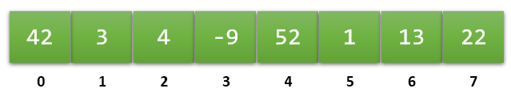

The solution this problem is to use the C++ library
class named vector. The most used of the standard library's
collection classes, a vector:
string in a vector
of int. Because of this, we say a that
vector is a homogenous
collection.
When you create a vector, its elements are stored right next to each other in memory; we say that the elements are contiguous. Each element (except the first and last) has a predecessor and a successor, so we say that the collection is linear.
Each element uses exactly the same amount of memory as any other, which allows your computer to locate an individual element instantaneously, using simple arithmetic, rather than by searching.

When creating a vector, you give the entire collection
a name, just like you would any other
simple variable. You access vector elements by specifying an
index or subscript representing
its position in the collection. The first element has the
subscript 0, the next 1, and so on.
Should numbering start with zero or one? If you think of a subscript as a counting number—#1, # 2, etc...—then zero-based subscripts make no sense. But subscripts are not counting numbers, but offsets from the beginning of the collection.
If you tell the compiler to retrieve v.at(5),
you are asking it to go to start of the vector
named v, then "walk past" five elements and
bring you the element which it finds there. If you tell it
to access v.at(0), the compiler
knows it doesn't have to skip any elements at all,
and it brings you the first element.